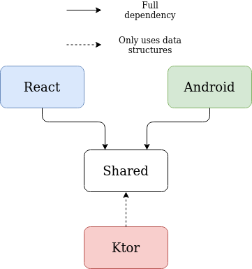
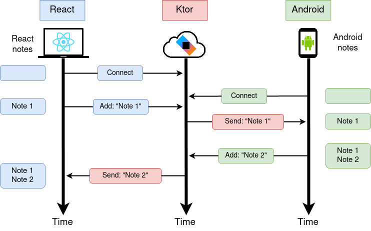

This article series contains parts of my thesis about Kotlin Multiplatform. The thesis is based on my Fuller Stack project which consists of an Android App, a Kotlin React.JS app and a Ktor server. The full thesis pdf can be found here.
Part 1 Introduction and the Server (This part)
Part 2 The shared module
Part 3 The Web App
Part 4 The Android App
Part 5 The Summary
The application allows for taking and saving notes. The notes are persisted locally and on the server, which allows for offline use. In order to use the app every user has to be authenticated. Thanks to this authentication the notes can be synchronized between multiple devices. When the user opens the app simultaneously on different devices and has internet access, the synchronization happens in real-time. This means that adding a new note on one devices is visible on other devices after a short delay. There are also operations which do not interact with the API or the database such as filtering, searching the notes and changing their date format representation.
Project structure
The project is divided into 4 main modules:

The React and Android module contain code for the UI of their respective platforms (Web and Android) and all other platforms specific code. Both of these modules depend on the Shared module, which is a Kotlin Multiplatform module. The shared module contains all of the data structures used in this project along with logic for the shared app features i.e. user input validation, database synchronization, networking, note operations.
The Ktor module contains the back-end (interchangeably called the server) that both of the client apps (Android and React.JS) use. It has a dependency on the Shared module but uses only the data structures from that module, no other logic is used. Unfortunately, even though this module does not need anything besides the data structures, it still needs to compile the whole Shared module. The data structures could have been duplicated between the Shared and Ktor module, which could cause problems when either of them gets out of sync. The Shared dependency in the Ktor module guarantees that all of the modules have up to date data structures.
GitHub Actions
GitHub Actions are a CI/CD (Continuous Integration / Continuous Delivery) tool that is inte- grated into GitHub repositories. GitHub Actions use so called workflows which could be used as CI, CD or both.
Continuous Integration is a practice of making frequent and small code changes. The workflows provided by GitHub Actions enable a way for automating the process of checking if the code is correct. These check usually consist of compiling the code, running tests and other actions. Thanks to this automation any errors or bugs can be caught early into the development cycle.
Continuous Delivery automates the deployment/release process. This project does not use CD so it will not be discussed in details. This MSc projects GitHub Actions have the following workflows:
- Build all of the platforms in order to verify that there have been no breaking changes intro-
duced; - Running tests for the Android app and the Shared code;
- Check the coding standards with the help of static code analysis tools.
These workflows are run every time a code change occurs in the GitHub repository ensuring that if something breaks it is caught early.
Static code analysis
It is an analysis which is performed without executing the code. Usually it is performed by an automated tool. This MSc project uses two static analysis tools, i.e.:
- Ktlint - checks the formatting of Kotlin code and notifies of any discrepancies in the coding standard. Additionally it has a built in formatter which can be used to automatically format Kotlin files;
- Detekt - checks the complexity of the code, for example it detects long function names or large blocks of code and then suggests what can be done in order to reduce the complexity.
Dependency Injection
In Object Oriented Programming paradigm dependency injection is the act of passing dependencies (classes) to clients (other classes). Usually these dependencies contain behavior which is used to extend the capability of the client. This results in using the composition over inheritance pattern. In brief, instead of inheriting behavior it should be contained in separate classes which are used by the client. Dependency injection also divides the responsibilities of classes, either a class creates other classes, or it contains a behavior logic and/or a state. Without this separation classes would be responsible for both of these things, which is contradictory to the single responsibility principle. This principle says that a class should only have on responsibility or just one reason to change.
Dependency Injection can be done manually by creating classes whose behavior consist of creating other classes or it can be done by using frameworks/libraries. On Android the most popular framework for dependency injection is Dagger 2. It eliminates the need for manually creating classes, because all of the creation classes are automatically generated during compilation. Unfortunately, Dagger 2 is only available on the JVM, which disqualifies it from this project because it reduces the capabilities of code sharing.
The cross-platform solution used in this project is Kodein. It is not a dependency injection framework but a service locator. It still creates the dependencies but in a different way. To put it simply, dependency injection frameworks give the dependencies and service locators provide dependencies when asked by a client.
Here is the general idea of how dependency injection is done with Kodein:
class Database() {
// ...
}
class GetNotes(private val database: Database) {
// ...
}
class Client(private val getNotes: GetNotes) {
// ...
}
val module = DI.Module("Module") {
bind() from singleton { Database() }
bind() from singleton { GetNotes(instance()) }
bind() from singleton { Client(instance()) }
}The module takes care of creating the classes and the GetNotes and Client classes just use what is injected in the constructor. Most of the dependencies can be injected through the constructor like in the example above, but sometimes the developer is not in charge of creating the classes e.g. an Android screen which is created by the system. In these cases the injection cannot happen in the constructor so it happens in the class properties by calling a Kodein function:
class Screen : DIAware {
private val getNotes: GetNotes by instance()
}The DIAware interface enables the use of Kodein in the Screen class. Dependency injection happens through the instance function which searches through the dependency graph until it finds the correct class and provides it to the Screen class.
Ktor server
The server enables the apps to be fully cross-platform, as a user can use multiple devices without losing access to their data. The Ktor server was build for the JVM environment meaning that it leverages Kotlin/JVM.
PostgreSQL Database
This database, later called a remote database, contains the users notes. The notes kept in this database are a reflection of the notes stored in the applications local database. When a note is added locally it is also added remotely to this database etc. This allows the user to change devices and have up to date notes in their applications.
Note Schema
This data structure is used for the remote database and also for the network calls in both of the apps. These are the most important fields:
- Title - the title of the note;
- Content - the body of the note;
- LastModificationTimestamp - the unix timestamp of last modification. This is used for comparing which version of the note should be kept during synchronization. The newer LastModificationTimestamp always overwrites the older one;
- CreationTimestamp - the unix timestamp of the creation time. This is used as the unique note identifier when synchornizing the notes locally. Normally this kind of an identifier is discouraged but for this project it will suffice;
- WasDeleted - a flag which indicates if the note was soft-deleted. The note still exists in the remote database but from the user's perspective it is deleted because they cannot see it.
Additionally, the remote database also has a field used for user identification.
Authentication
Authentication is handled by a third-party platform called Auth0. The platform provides integration for multiple platforms including Android and React.JS. Delegating user authentication to a third-party means that the developer has fewer things to be concerned about like developing their own integration and security concerns.
Auth0 in the client apps allow the user to sign in using their email or Google account. The authentication flow is as follows for both platforms:
- User clicks the sign-in button in the app.
- A new website is open (redirected in case of the web app). This website allows the user to input their credentials and sign into the app.
- If the credentials are correct, the user is authenticated and redirected back to the app.
This whole flow is handled by Auth0, which means that the Ktor back-end is not involved. However, every call to the back-end after the authentication requires a subsequent authentication because every note is tied to a user and the server needs to differentiate between users notes.
When the apps are sending requests to the back-end they also send a JSON Web Token (JWT) which is used by the server to obtain the user ID. This token is provided by the Auth0 libraries used on the client side. JWTs are widely used for authentication. Ktor provides an extra package for their support which means it does not need Auth0 or any other third-party dependencies for user authentication.
Websocket
Websockets are a computer communications protocol allowing two-way communication between the client and the server. This protocol is used to give the user real-time updates about their notes. Ktor provides an additional package to create websocket sessions.
Client
Every client app at a startup connects to the socket endpoint and sends the user's ID in order to identify and send updates to the correct user. In addition to the user ID, cookies are used to differentiate users sessions. As an example, if a user opens two browser windows, changes from one window are sent to the other window and the same occurs for other devices.
Server
The back-end listens to socket connections and when a connection is established, the client sends the user identifier which is the only thing the client sends through the websocket. If the user is valid the connection is saved along with the session. After the client makes a change in the notes, the websocket notifies the clients but only the sessions which did not make the change. This prevents unnecessary data transmission because the source of the changes does not need to be notified of them.

Technologies used
- Ktor with (Server core, Server netty, Auth JWT, Websockets, Serialization)
- Kodein - cross-platform dependency injection;
- Klock - cross-platform Date and time library;
- Kotlin coroutines - enables coroutines support in Kotlin;
- Exposed - allows for the use of databases;
- PostgreSQL JDBC Driver - enables the server to connect to a PostgreSQL database;
- H2 Database - database engine used for running an in-memory database for development purposes.
Hosting
Back-end hosting is provided by Heroku which is a platform for building and deploying applications. It supports multiple programming languages and frameworks, including Java and Kotlin applications such as Ktor. Besides the back-end Heroku also hosts the remote PostgreSQL database.
Heroku has a great documentation and a big community which makes finding help easier. It also offers a generous free plan which is perfect for side-projects or university projects like the one for this MSc thesis. The only requirement is an account which can be created without any payment.
Source code
The source code for the Ktor server can be found in the project repository. Keep in mind that I don't dabble with back-end development professionally so the code probably doesn't comply to best practises.